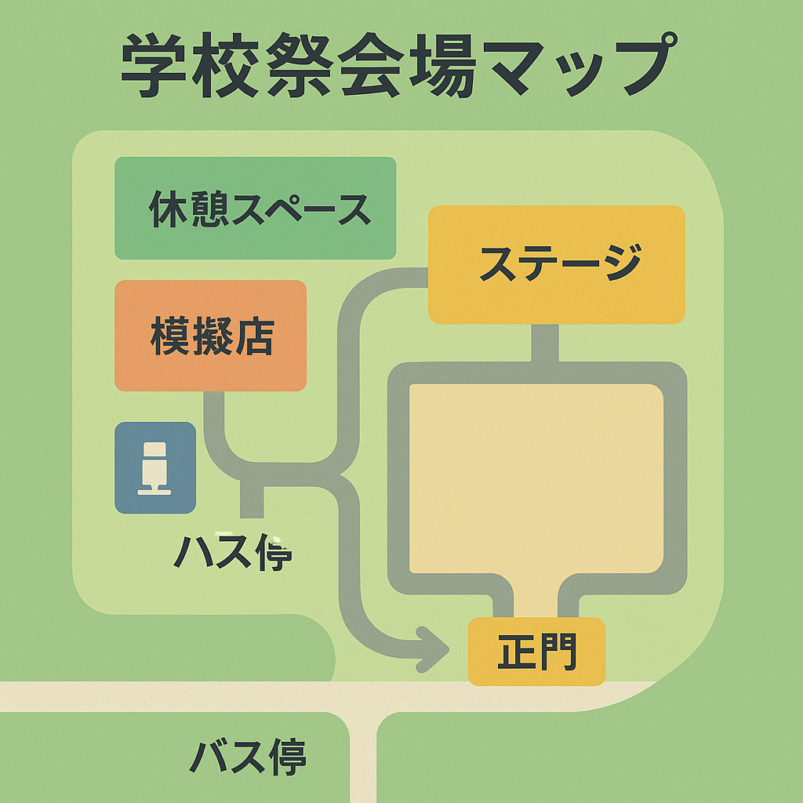

今年も盛大に学校祭を開催いたします！
皆様のご参加をお待ちしております。
開催概要
開催日時: 2025年10月15日（土）～ 10月16日（日）
両日とも 9:00 ～ 17:00
会場: 本校キャンパス
イベント内容
- オープニングセレモニー (9:00 ～ 9:30)
- 各学科展示・発表 (9:30 ～ 16:00)
- 音楽ライブ (12:00 ～ 13:00)
- ゲーム大会 (14:00 ～ 15:00)
- 模擬店 (10:00 ～ 16:30)
- エンディング (16:30 ～ 17:00)
各学科の展示では、学生たちが1年間学んだ成果を発表します。
プログラミング、デザイン、ビジネスなど、様々な分野の作品をご覧いただけます。
参加について
- 入場料は無料です
- 事前申込は不要です
- 駐車場には限りがありますので、公共交通機関をご利用ください
※ 雨天の場合は一部内容を変更して実施いたします
交通案内
電車でお越しの場合
- JR山手線「渋谷駅」より徒歩8分
- 東京メトロ銀座線「表参道駅」より徒歩12分
詳しいアクセス方法は学校公式サイトをご確認ください。
バスでお越しの場合
- 都営バス「学園前」バス停より徒歩3分
お問い合わせ先
学校祭実行委員会
電話: 03-1234-5678
メール: festival@school.ac.jp
受付時間: 平日 9:00 ～ 18:00
その他の情報
会場内には休憩スペースがございます。
お食事は模擬店をご利用いただけます。
車椅子でのご来場も可能です。
〒150-0001 東京都渋谷区神宮前1-1-1
TEL: 03-1234-5678